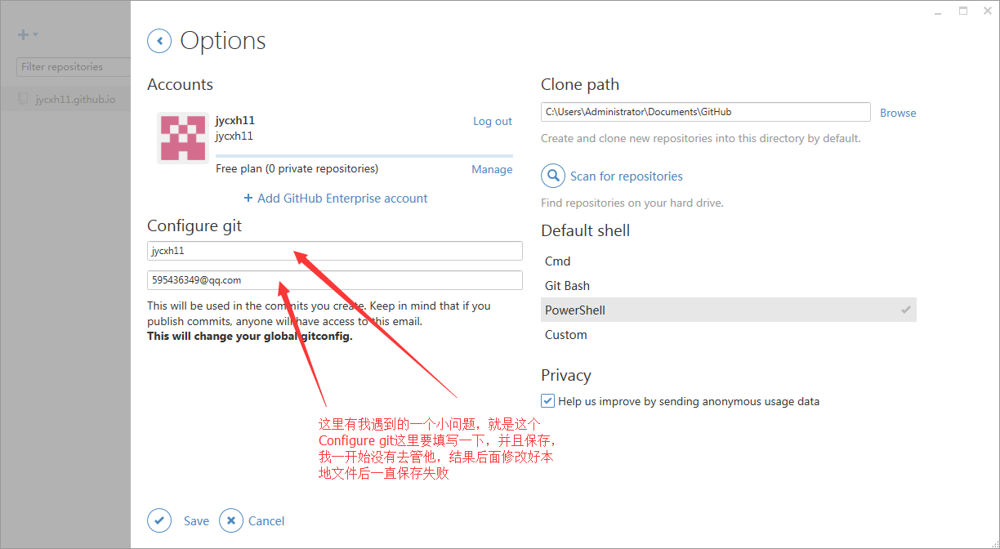
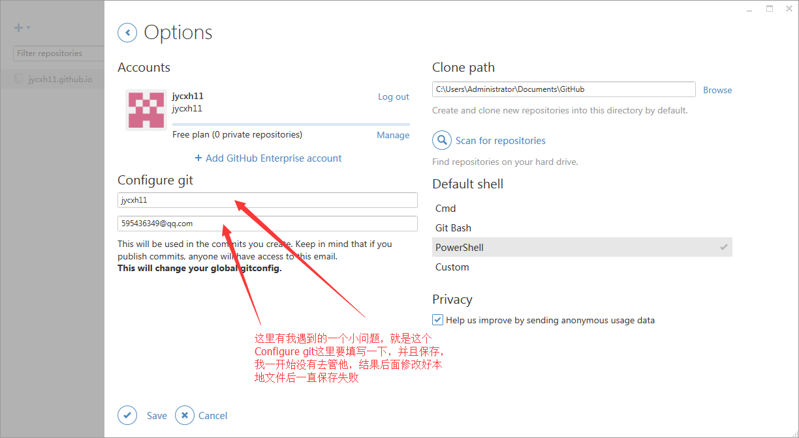
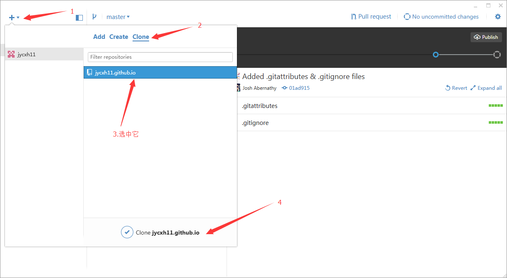
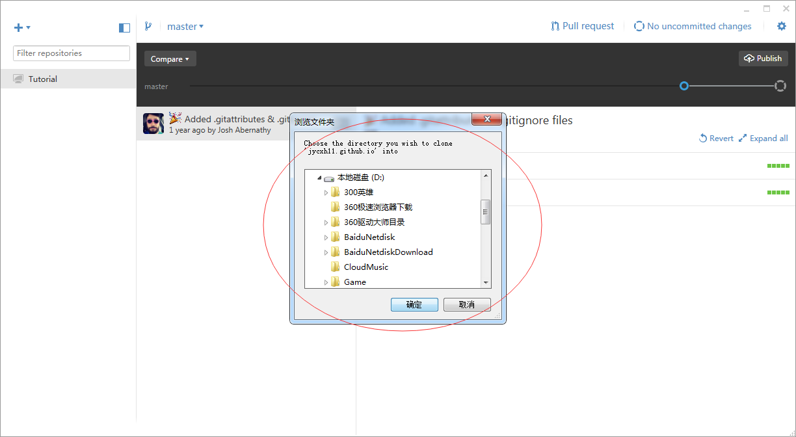
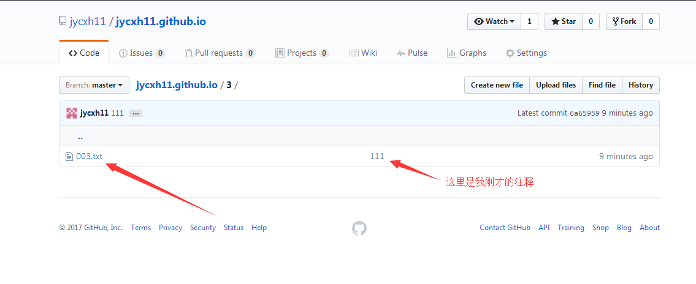

一、下载与安装
下载地址：
.net Framework 4.5
Github Desktop
下载好.net Framework 4.5后直接安装，然后解压缩Github Desktop，非常简单
解压好后可以找到这个文件直接右键→发送到→桌面快捷方式，在桌面上创建一个快捷方式

二、登录GitHub并下载文件至本地
打开GitHub，然后在右上角有一个小齿轮图标，点击，倒数第二个Options，然后添加账户
 

之后就是将GitHub上的东西下载到本地了，这里Create是创造、创建的意思，Clone是克隆的意思，也就是复制到本地

这里选好了会跳出一个浏览文件夹，选择你要将文件存放在哪个文件夹里，点击确定后就等它下载到本地吧

三、修改本地文件并提交
我们现在就可以在本地修改文件了，我在这里就新建一个文件夹“3”，然后在里面放点东西，这是可以看到右上角这里放生了一点改变

我们将在本地做的修改提交，然后点击右上角的Sync上传到GitHub

这时我们登录GitHub可以看到我们在本地做的修改已经上传上去了
